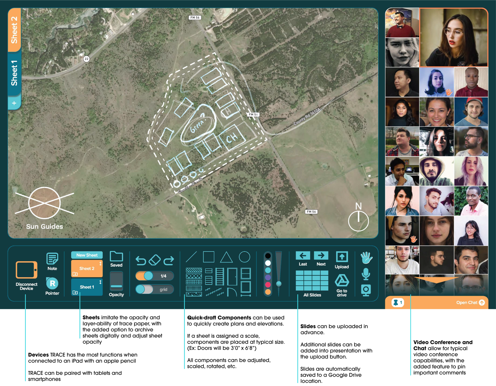
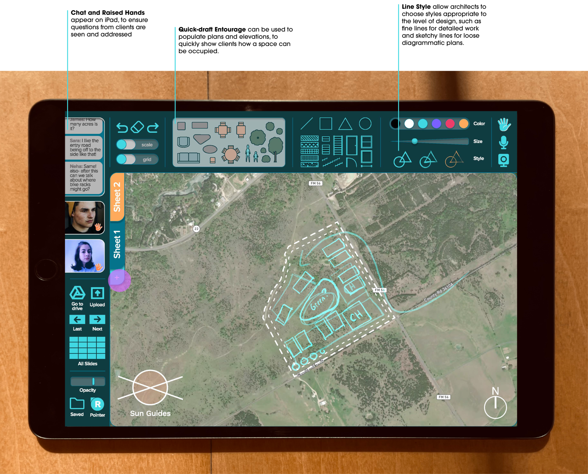
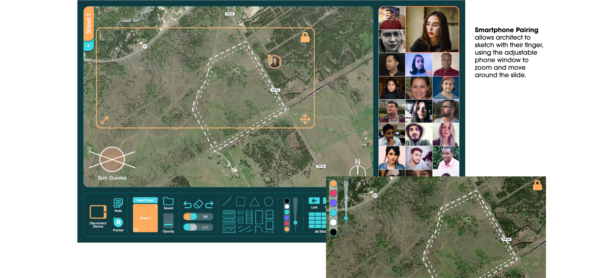

TRACE
TRACE is a video conference application for architects, which combines the benefits of analog sketching and digital drafting, to create an experience for architects and clients that fosters a quick and elegant iteration process and clear communication.
Trace paper is simple but critical to any architectural design meeting. Its translucent nature allows architects to quickly iterate on a design, easily building on past versions and overlaying ideas as needed. In client meetings, trace paper allows architects to quickly but elegantly present ideas and changes, as they happen, to the client, who in turn, can give valuable feedback to inform further iterations.
With the Covid 19 pandemic, client meetings moved to video conference apps, which have limited drawing abilities, resulting in an awkward and slow in-meeting iteration process, leaving clients confused with proposed changes and unable to give informed feedback. Working as an architectural designer, I saw first-hand how this slowed down our design process and left architects and clients frustrated.
TRACE aims to fuse the analogue sketching process with the digital space, with translucent sketching layers and the option to pair with tablet pens such as the iPad and Apple pencil. In addition, TRACE has quick-draft components and entourage, to easily iterate in detail and populate plans and elevations.
The two demo videos on the live page (typical sketching on trace paper vs. TRACE's digital version) are hosted on Vimeo, not as downloadable images — link out to them from the original site if you'd like to keep them, or re-record a quick screen capture.
Interface and Details


